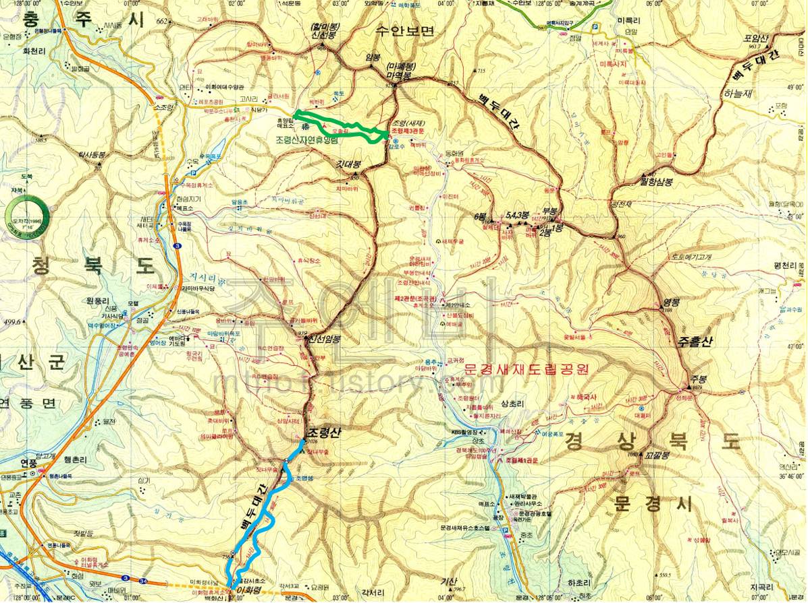

조령산(1017m)

| 2020년 10월 11일 |
조령산 자연휴양림 매표소, 새재 옛길, 조령3문, 자연휴양림 |
| 2020년 ??월 ??일 |
이화령 휴게소 (해발 548m), 약수터, 조령산 |
참고 링크
- 조령산 자연휴양림: 조선시대 '핫플' 합격으로 가는 지름길
백두대간 고개
마패봉~조령제3관문~조령산~이화령은 백두대간의 일부이다.
- 새재 = 문경새재 = 조령 鳥領
- 새재는 새들이 넘나드는 고개 또는 새도 쉬어 가는 고개라는 뜻으로 보인다. 새롭게 생긴 고개라는 추측도 있지만, 이 경우 한문으로 표기한 조령과 맞지 않는다.
- 새재란 말이 먼저 생기고, 새재가 있는 산이란 뜻으로 조령산이란 이름이 붙은 것으로 추측된다.
- 다른 고갯길 대비 경사도가 완만하여 길이 편하다.
- 마패봉: 어사 박문수가 고개를 지다가다 마패를 걸어 놓았다고 해서 붙여진 이름. 사실 여부는 알 수 없다.
- 이화령梨花嶺: 배나무가 많았다 하여 이름이 유래. 길이 험해서 새재가 더 많이 이용되었다. 남한을 종주하는 자전거 길이다.
- 고사리: 고사찰이 있던 마을
준비물
지도, 쌍안경, 아빠점심, 과일(사과/복숭아), 깔개, 보조배터리, 카메라, 생수 (더 많이 가져가자), 이온음료, 장원김밥느낀 점, 배운 것
- ...
- ...
- ...
- ...